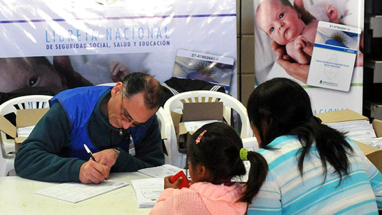
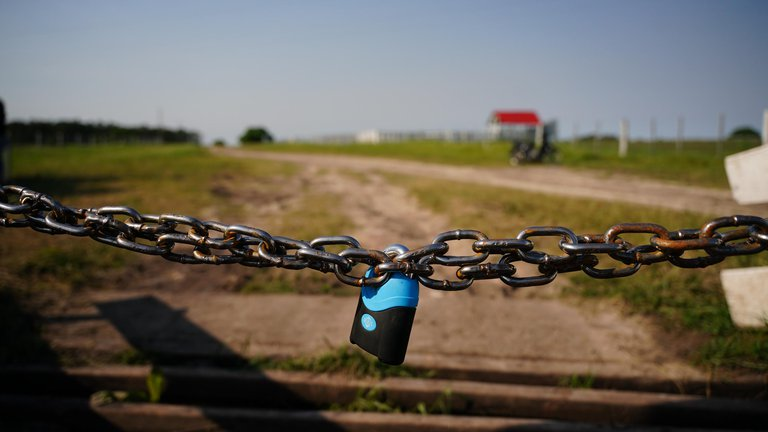
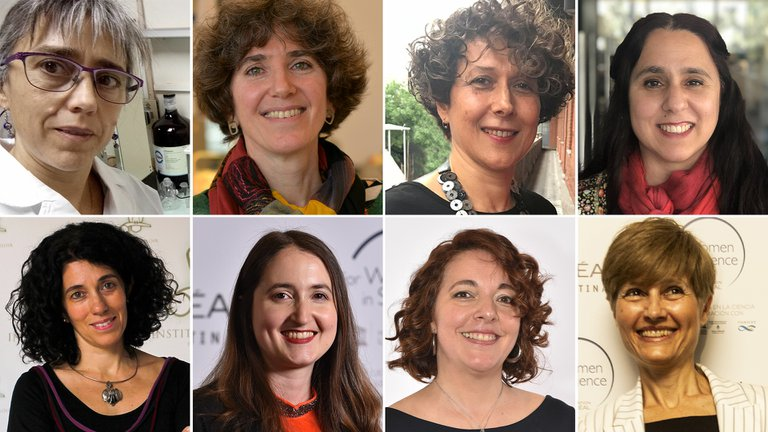
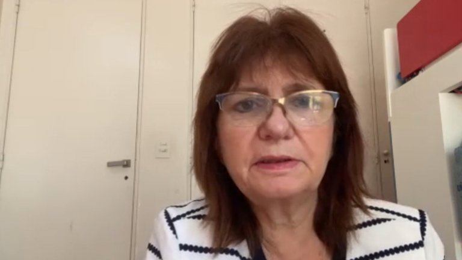

Un sitio donde se pueden leer diarios
| Mas Leidas del Martes 20/10 | Visitas |
|---|---|
| ¿Cómo será el AUH? | 1650 |
| Lanús derrotó al San Pablo | 1353 |
| Conflicto de la familia Etchevehere | 1252 |
| Las damas de la ciencia argentina galardonadas | 869 |
| “Kicillof regala dinero como si fuera de él" | 759 |
Economia
A 11 años del lanzamiento de la Asignación Universal por Hijo (AUH), el presidente Alberto Fernández anunciará este jueves la inclusión de cerca de un millón de niñas, niños y adolescentes al sistema de protección social, por medio del cual se cobra una asignación mensual.
Según informaron fuentes oficiales, Fernández hará el anuncio mañana por la tarde, en la residencia de Olivos, junto a la titular de la Administración Nacional de la Seguridad Social (Anses), Fernanda Raverta. Además, ya no habrá más tope de 5 hijos para que las familias puedan cobrar el beneficio, confirmaron desde el organismo previsional. La AUH –creada el 30 de octubre de 2009, en la presidencia de la actual vicepresidenta Cristina Fernández de Kirchner– es una asignación mensual por hasta cinco hijos menores de 18 años y la cobra uno solo de los padres, con prioridad de la madre.
Deportes
Luego de tanta espera, Lanús volvió a la actividad en el estadio Néstor Díaz Pérez para afrontar su debut en la Copa Sudamericana contra el San Pablo, la potencia de América que llegó a su compromiso luego de quedar eliminado en la fase de grupos de la Libertadores.
El comienzo no fue como el esperado. A pesar de la ansiedad y de las ganas vertiginosas que intentaron llevar el pleito a la zona de Tiago Volpi, algunos errores defensivos a cargo de Guillermo Burdisso facilitaron la tarea de Brenner para que el goleador brasileño festeje el 1 a 0 en la Fortaleza. La experiencia de José Sand y la velocidad de Pedro De La Vega no eran herramientas suficientes para llegar a la igualdad, y en el entretiempo Luis Zubeldía intentó modificar la rebeldía ofensiva de sus dirigidos para poder lastimar al gigante.
En el complemento el Granate consiguió triangular a través de sus hombres más incisivos y un toque del Pepo, un centro de Di Plácido y un disparo del Pepe conformaron el tanto de la igualdad que llevó más tranquilidad al banco local. El eterno y vigente Sand fue el autor del grito de desahogo gracias a su oportunismo.
Politica
Un candado, 800 metros de distancia y unos 20 efectivos policiales separan a los hermanos Etchevehere. Luis Miguel y Diego Alonso se encuentran por fuera del predio en pugna acompañados por un grupo de ruralistas y con el respaldo político de Juntos por el Cambio, que contó con la presencia del ex senador Miguel Ángel Pichetto en el lugar. Dolores, en cambio, se encuentra en el interior de la finca junto a militantes sociales liderados por Juan Grabois, a cargo del “Proyecto Artigas”. De este modo, tras conocerse la postergación de la Justicia para mañana a las 10 sobre el pedido de desalojo de la estancia “Casa Nueva”, en Entre Ríos, la tensa calma continua.
Cada una de las partes sostiene su posición y espera con ansias la resolución que mañana dará el Tribunal de Juicio y Apelaciones de Paraná, a cargo de Carolina Castagno. Mientras los minutos pasan hasta la hora indicada, los hermanos varones Etchevehere harán una vigilia en el lugar y Dolores continuará dentro del predio.
Ciencia
En un año marcado mundialmente por la emergencia sanitaria desatada por la pandemia de COVID-19, L’Oréal Argentina acompaña y agradece el aporte de ocho de las científicas que fueron galardonadas con el Premio Nacional L’Oréal-UNESCO “Por las Mujeres en la Ciencia”, y que se encuentran trabajando en proyectos para combatir la pandemia.
Andrea Gamarnik, Silvia Goyanes, Juliana Cassataro, Anabella Srebrow, Micaela Godoy Herz, María Fernanda Ceriani, Adriana Serquis y Vera Álvarez, son las científicas argentinas que están desarrollando diferentes productos de protección personal contra el coronavirus, así como vacunas y tests que ayuden a mejorar los tiempos y costos en la detección del virus.
Estas ocho mujeres son parte de las 36 científicas que ya han obtenido el Premio Nacional L’Oréal-UNESCO “Por las Mujeres en la Ciencia” que se realiza desde hace 14 años en el país en conjunto con el Consejo Nacional de Investigaciones Científicas y Técnicas (CONICET). Además, 6 de ellas alcanzaron el reconocimiento internacional. Este año 107 científicas presentaron sus proyectos para participar de la edición 2020 del premio, marcando un récord para la categoría “Ciencias de la Materia” que destacará la labor en esta área.
Politica
Luego de que el gobernador de la provincia de Buenos Aires, Axel Kicillof, oficializara que para desarticular las ocupaciones ilegales de terrenos entregaría subsidios de 300 mil pesos por persona (por año), durante la tarde del miércoles la oposición se pronunció en contra de tal decisión. Patricia Bullrich, ex ministra de Seguridad de la Nación, fue una de las dirigentes que expuso su malestar ante una partida que buscará desactivar la toma de terrenos en Guernica y evitar nuevas usurpaciones. En su cuenta de Twitter, la presidenta del PRO estableció la siguiente comparación: “Policía PBA: $44.000. Repositor de supermercado: $37.000. Usurpador: $50.000”.
Y agregó: “Pese al mérito y el sacrificio, miles de trabajadores se quedan en la calle y las pymes bajan sus persianas. Frente a este reclamo, Kicillof le responde a los bonaerenses regalando dinero como si fuera de él”.
Cristian Ritondo, presidente del bloque del PRO en la Cámara de Diputados, también se manifestó en desacuerdo y pidió “elevar las penas para los usurpadores”. El ex ministro de Seguridad de la provincia de Buenos Aires presentó un proyecto de ley para elevar las penas del delito de usurpación. La iniciativa propone modificar el artículo 181 del Código Penal, que actualmente establece una pena de 6 meses a 3 años de prisión. Esa pena pasaría a ser de 1 a 6 años de prisión. Además, se considerará agravante cuando en la toma participen más de 3 personas. En ese caso la pena será de 2 a 7 años. Pero si el inmueble usurpado fuere un parque nacional o una explotación productiva, la pena será de 2 a 7 años, y de 3 a 8 años si participan más de 3 personas. Por último, si de la toma participan empleados o funcionarios públicos quedarán inhabilitados de por vida para ejercer cargos públicos.